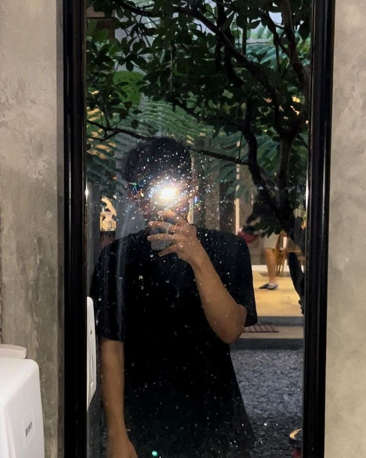

Tentang Saya

Skill Unggulan
- design
- membaca al quran
- coding
Riwayat Pendidikan
| SMA | IT HSI IDN | Tahun ke 2 |
|---|---|---|
| SMP | al kisai karawang | 2024 |
| SD | pondok pesantren al-jannah karawang | 2021 |
saya adalah seorang pelajar dalam bidang IT dan juga agama
| SMA | IT HSI IDN | Tahun ke 2 |
|---|---|---|
| SMP | al kisai karawang | 2024 |
| SD | pondok pesantren al-jannah karawang | 2021 |